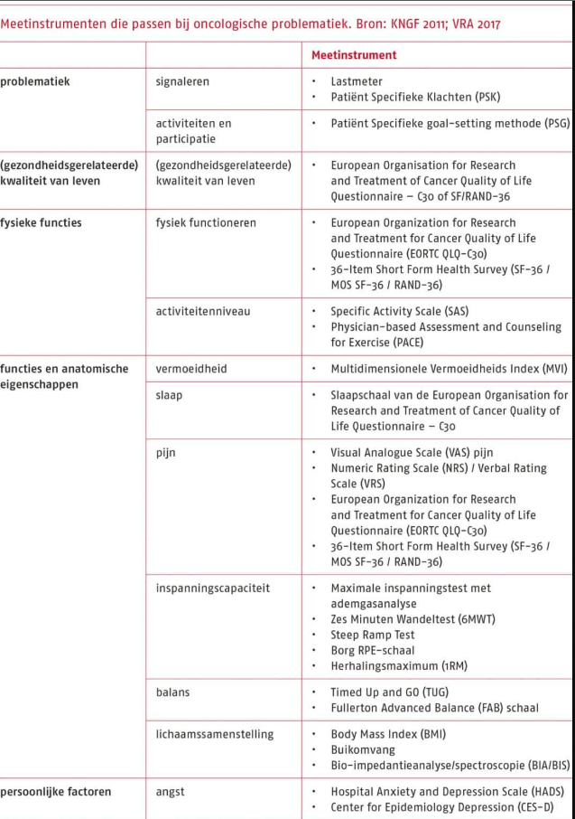

Algemene richtlijn oncologie
De fysiotherapeutische behandeling bij oncologiepatiënten is vooral gericht op het verbeteren van het fysiek functioneren. Hierbij stelt de richtlijn van het KNGF 4 belangrijke punten op, ongeacht de fase waarin de patiënt zich bevindt:
- Het stimuleren van bewegen en het adviseren daaromtrent;
- Het optimaliseren van activiteiten die voor de patiënt relevant zijn, en het optimaliseren van de functies en anatomische eigenschappen die een voorwaarde vormen voor bewegen, en aan de patiënt leren om deze te onderhouden;
- Het bestrijden van klachten en barrières die de patiënt bij het bewegen ervaart;
- Het bevorderen van gedragsverandering in de richting van een actieve levensstijl.
Bij de longpatiënt zou dit zich vooral uiten in het verminderen van benauwdheidsklachten, verbeteren van fysiek functioneren en het omgaan met vermoeidheid.
De algemene aanbevelingen van fysieke activiteit bij oncologie komen grotendeels overeen met de algemene norm gezond bewegen. Hierbij wordt gestreefd naar tenminste 3 keer per week aerobe activiteit langer dan 30 minuten en minimaal 2 keer 20 minuten krachttraining. Als toevoeging kunnen er rek-, coördinatie- en balansoefeningen meegegeven worden als dat nodig is. Het is de rol van de therapeut om de patiënt hierin te begeleiden en te activeren. De hulpvraag staat hierin centraal.
Om een beter beeld te krijgen van de patiënt kunnen vanuit de KNGF-richtlijn de volgende meetinstrumenten worden toegepast.

Bij de longpatiënt zullen vooral de meetinstrumenten rondom fysieke functies van toepassing zijn.